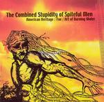

| Artist: | Various Artists |
| Title: | The Combined Stupidity Of Spiteful Men |
| Label: | House of Stairs HOS004 |
| Length(s): | 41 minutes |
| Year(s) of release: | 2003 |
| Month of review: | [12/2003] |
| 1) | Dead Men Wear Tags | 5.12 |
| 2) | Anti-american Girl Place | 4.25 |
| 3) | Forget | 7.18 |
Foe
| 4) | Myrmidon | 10.22 |
Art Of Burning Water
| 5) | Who's Going To Help God When I'm Finished With Him | 1.32 |
| 6) | The Well (Because We Are) | 2.38 |
| 7) | Destroyer Disgraced | 2.48 |
| 8) | Gates Of Kazantrutha | 6.54 |
Second up is Foe, who make more melodic instrumental material. The heavy guitar remains present, but due to the absence of oppressive vocals -most often complementary in this vein- and the strong melody the sound is pretty open, almost friendly. As the track continues it becomes more frantic and interweaved. Despite its significant length it has no problems in keeping the attention, a feat in itself for an instrumental piece. Good one.
The words on the vocals on Art Of Burning Water's material are pretty impossible to make out at times, but far better at others. These vocals oddly move between metal and a punky feel. The guitar sound is pretty clear, quite the opposite of the droning feel we often get, as well as melodic, giving this an open feel. A lot of guitar, but in no way guitar meistering: strong melodies, well adapted instrumentalists and a good total. This band has a bit of the feel of early Neurosis (first couple of albums). Thumbs up.